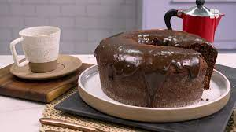
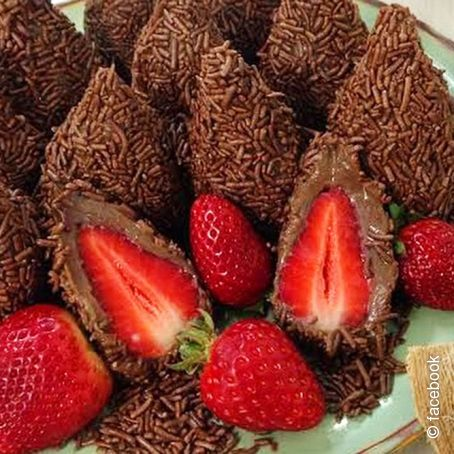

Arroz de Couve-Flor
Deixe a couve-flor picada. Adicione os ingredientes e refogue bem. Adicione sal, tampe a panela e deixe cozinhar.
Bolo de Café
Bata o açúcar, as gemas e o café. Adicione farinha e chocolate e mexa bem. Bata as claras e junte à mistura.
Coxinha de Brigadeiro
Junte o leite condensado, chocolate em pó e manteiga. Aqueça no fogo baixo.Envolva os morangos e passe no granulado.